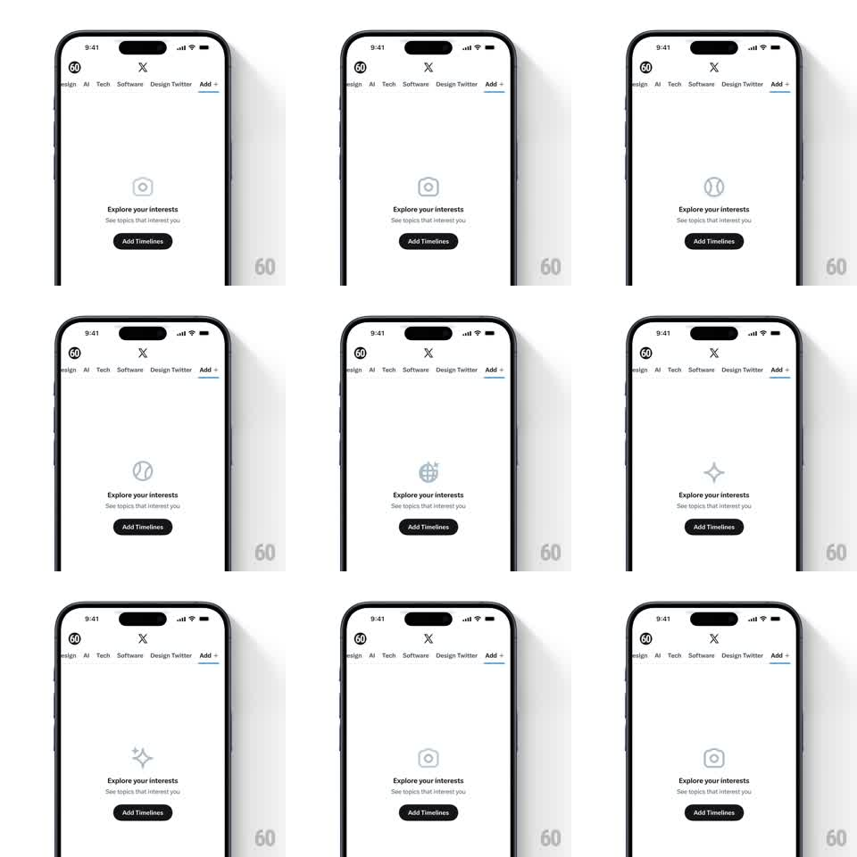

Media
Frame-by-frame

Rebuild this animation 1:1: X's "Explore your interests" empty state - a centered icon slowly cycles through topic glyphs (camera, baseball, globe, sparkles, hexagon) with soft crossfades above the empty-state copy and "Add Timelines" button, under a scrollable topic chip row.

Rebuild this animation 1:1: X's "Explore your interests" empty state - a centered icon slowly cycles through topic glyphs (camera, baseball, globe, sparkles, hexagon) with soft crossfades above the empty-state copy and "Add Timelines" button, under a scrollable topic chip row. ## Integration Integration: stack-agnostic spec - springs given as stiffness/damping, timed motions as duration + curve; map every value to your framework and animation library of choice. ## Scene Light screen: horizontal chip row top (design, AI, Tech, Software, Design Twitter, "Add +"), centered empty state: cycling icon, "Explore your interests" headline, "See topics that interest you" subline, black "Add Timelines" button. ## Motion spec Pattern: ambient icon carousel, ~2s per glyph. - The icon crossfades between topic glyphs (400ms crossfade, 1.6s hold): camera -> baseball -> globe -> sparkles -> hexagon -> repeat. - Each glyph enters with a tiny rise (translateY 6px -> 0) during its fade-in. - Everything else is perfectly still - headline, subline, button never move. ## Calibration - Crossfade only - no slide, spin, or bounce. The restraint is what makes it feel like X. - Monochrome outline glyphs, consistent stroke weight across the set. ## Reduced motion Static globe glyph. ## Don't miss - The cycle order implies breadth (creative -> sports -> world -> magic) - keep variety, not one category. - The chip row is real and scrollable; the animation lives only in the empty state.